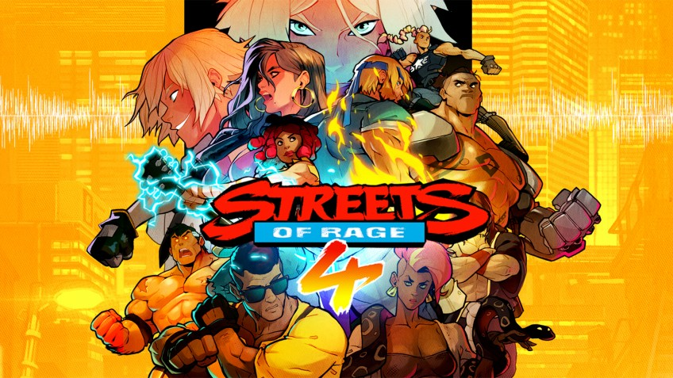

Статья
Обзор Streets of Rage 4. Ретро с кулаками

В конце 80-х – начале 90-х битэмапы были одним из самых популярных и востребованных жанров: вспомните только Double Dragon, Final Fight, Golden Axe, Battletoads, TMNT и, конечно же, Streets of Rage.
Простое управление, доступный геймплей, впечатляющая графика и возможность совместного прохождения покоряли миллионы игроков. Но, когда пришла мода на 3D, жанр мгновенно сдулся.
С тех пор отголоски этой классики можно встретить в кроссжанровых играх (Yakuza, Guacamelee!), а некоторые игроки считают наследниками битэмапов слэшеры вроде Devil May Cry или God of War.
Capcom выдала два интересных эксперимента с жанром – двумерную Viewtiful Joe и трёхмерную God Hand. Но если говорить о классическом 2D-мордобое с кооперативом, то удачные примеры крайне редки.
Десяток лет назад это были Castle Crashers и Scott Pilgrim vs. The World: The Game, в середине 2010-х – Mother Russia Bleeds, в прошлом году – River City Girls.
Microsoft ещё грозится возродить Battletoads, но видно, что по сравнению с платформерами и метроидваниями, от которых в последние годы отбоя нет, классические битэмапы – в дефиците.
Восполнить его решилась компания DotEmu, добившаяся у Sega прав на серию Streets of Rage и выпустившая долгожданную Streets of Rage 4.
Хотя мы ждали продолжения целых 25 лет, в мире игры прошёл всего десяток. Вуд-Оук-Сити захватил новый преступный синдикат, возглавляемый детьми мистера Икса, антагониста оригинальной трилогии (их, конечно же, зовут мистер и мисс Игрек).
На борьбу со злодеями выходят Аксель и Блейз — бессменный дуэт бывших полицейских. К ним присоединяются юная гитаристка Черри – дочка Адама из первой Streets of Rage – и здоровяк Флойд с механическими руками, протеже доктора Зана из третьей части.
Streets of Rage 4 выдержана в духе классических выпусков, поэтому сценарий в ней минималистичный – коротенькие заставки только представляют боссов (среди которых очень много старых знакомых) и связывают между собой этапы. Игра не воспринимает себя всерьёз, но и в пародию не превращается, навевая воспоминания о боевиках 30-летней давности.
Суть Streets of Rage 4 предельно проста: идём слева направо, встречаем противников – как правило, всяческих бандитов – бьём их, потом бьём подкрепления. В ход идут удары руками и ногами, броски, суперприёмы и холодное оружие, которое приносят сами враги.
Когда все противники будут побеждены, нам позволят идти вперёд. Никаких объективных причин, почему по уровню нельзя пройти насквозь, нет – это классическая условность. Которая тут обёрнута в часть механики: граница экрана считается стенкой, от которой рикошетят брошенные предметы и враги.
Что открывает простор для джагглов – ведь если не дать противнику приземлиться, он не сможет перейти в контратаку! На этом строится значительная часть тактики.
А другая часть – на спецприёмах. В классических битэмапах они делались за шкалу здоровья, что сильно демотивировало к ним прибегать. Streets of Rage 4 немного изменяет эту механику: здоровье, потраченное на супер, можно восстановить, поколотив врагов, – как в Bloodborne. Но это правило действует до первого пропущенного удара.
Так что приходится рассчитывать, когда именно стоит инвестировать здоровье в лишний урон, чтобы оставалась безопасная возможность отвоевать его обратно.
Главное достижение Streets of Rage 4 – в том, что она, никак не меняя оригинальную формулу классических битэмапов, не ощущается устаревшей. Во многом благодаря большей тактической глубине и отзывчивому управлению – именно этого так не хватало тридцать лет назад. Быть может, её успех вдохновит и других разработчиков попробовать себя в этом жанре?
Потому что добавки хочется уже сейчас: как и вся классика, Streets of Rage 4 крайне скоротечна и проходится буквально за пару часов. Стимул к перепрохождению есть – за каждого из героев свой стиль игры, плюс есть разные режимы и бонусные персонажи – но это всё же не «рогалик», чтобы возвращаться десятки и сотни раз.
Да и за конкретного персонажа развернуться особо негде: приёмов не так много, как хотелось бы.